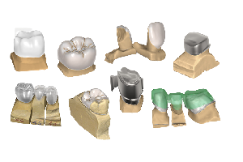

About us

Hightech tools for high precision artisans exocad DentalCAD is the tool for every dental technician 3D designer who wants to be part of the future in digital dentistry. Already the standard version of our software covers a wide variety of indications, making it an attractive choice both for expert users and newcomers in the dental CAD field. The strength of exocad DentalCAD is its simplicity. There is no point in creating software that makes your job harder, so it doesn't. Even for first-time users, it's extremely logical and easy to use, because the software emulates the analog work of a dental technician.
Buy Now